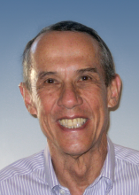

Please note: the AAS Obituaries are temporarily being hosted on this website while their full content is being ingested into the PubPub publishing platform newly adopted by the Bulletin of the American Astronomical Society. When the migration is complete, your existing links will take you to the final, migrated content. Contact peter.williams@aas.org with any questions.
David S. De Young (1940-2011)

Dr. David De Young died on December 2, 2011. Dave, an astronomer with tenure, arrived at NOAO in 1980 and had recently retired at the end of September 2011. His outstanding efforts to promote the quality of research, from the telescopes and from the staff, will be greatly missed.
Dave was born in Colorado Springs, Colorado, and earned his BA from the University of Colorado in 1962 and his PhD in physics and astronomy from Cornell University in 1967. He joined the National Radio Astronomy Observatory (NRAO) in 1969 as an Assistant Scientist. He was hired to bring theoretical expertise to NRAO, but quickly became involved in observing and analysis. He was promoted to Associate Scientist in 1972 and to Scientist with Tenure in 1974. He left NRAO to join NOAO (then Kitt Peak National Observatory) in 1980.
“Throughout his career, Dave was motivated by a deep commitment to the science,” says Sidney Wolff, past NOAO Director. “We all remember him saying repeatedly at TAC meetings, ‘Where’s the physics?’ It was Dave who established the basic TAC processes that are still used today—processes that ensure a fair and open discussion of each proposal and its merits. I also valued his thoughtful advice. I could discuss any issue with him, no matter how sensitive or difficult, explore options for what to do, and yet know that the conversation would remain completely confidential.”
Dave was instrumental in the development and deployment of the virtual observatory: as Project Scientist for the National Virtual Observatory development project (2002-2009), as Project Scientist for the Virtual Astronomical Observatory operational facility (2010-2011), as chair of the International Virtual Observatory Alliance (IVOA, 2007-2008) and as chair of the IVOA Committee on Science Priorities (2008-2011). Dave was unrelenting in his push to keep the VO efforts focused on science capabilities and not dominated by technology for its own sake. In accord with his own interests in theory, he was also a strong advocate for the integration of theoretical simulations into the VO. Many of his VO colleagues throughout the world have expressed their sadness at Dave’s passing, and the next meeting of the IVOA Interoperability Workshop will be dedicated to Dave’s memory.
Among other accomplishments, he authored a book
The Physics of Extragalactic Radio Sources
(2004). He had over 120 scientific publications.
Dave’s service activities to NOAO included acting as Chairman of the two KPNO telescope Time Allocation Committees, membership on the NOAO IPAC Committee, membership on the WIYN Board of Directors, membership on the WIYN Scientific Advisory Committee, membership on the NOAO Management Committee, supervisor of the NOAO Tucson library, member or chairman of the ad hoc KPNO Personnel and Post-Doctoral Selection Committees, Chairman of the AURA Strategic Planning Committee, co-author of the AURA education and outreach proposal to the NSF, membership on the AURA interim team for the SOFIA proposal, and membership on various ad hoc NOAO committees such as NOAO 2000 and the AURA-sponsored Albuquerque Workshop.
Dave served as Associate Director of KPNO from 1982 to 1987 and as Associate Director of NOAO from 1988 until 1993.
He was very involved with the Aspen Center for Physics beginning with an astrophysics workshop that he attended there in 1972 and continuing for his entire career. He was very influential in promoting the astrophysics program at the Center and obtained NASA support for the early summers. He served on the Board of Trustees beginning in 1974 and held positions including Scientific Secretary, 1980-81; President, 2001-2004; and Chair of the Executive Committee, 2001-04. Dave was an avid runner, and he would arrive in Aspen every summer in time to run in the July Fourth race.
Dave’s main research interest was in active galactic nuclei. He also carried out extensive numerical modeling of airflow over Mauna Kea and Cerro Pachón in order to facilitate site selection for the Gemini Project, and he did numerical simulations of airflow in telescope enclosures and around mirror cells to assist the Gemini project in enclosure and telescope design. More recently, Dave was the co-chair at NOAO for the site survey working group for the Thirty Meter Telescope (TMT) project. This group initiated the survey of sites in Northern Chile for TMT and the computational analysis of individual peaks including candidates in Chile, Mexico, and Hawaii.
He is survived by his wife Mary Ellen, and two children: a son Christopher and a daughter Lynn.
Photograph:
P. Marenfeld/NOAO/AURA/NSF
This obituary is adapted from the one that originally appeared on the NOAO website.
Obituary written by: Catharine D. Garmany (NOAO), Robert J. Hanisch (STScI)
Additional links:
BAAS Citation: BAAS, 2013, 45, 010